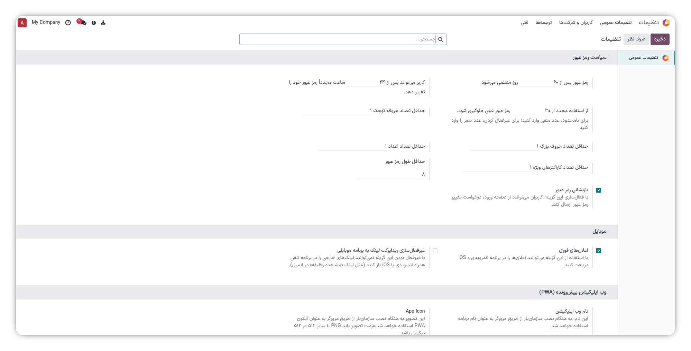

یکی از مهمترین ارکان حفاظت از اطلاعات سازمانی، مدیریت اصولی رمزهای عبور کاربران است. در بسیاری از سازمانها، نبود قانون مشخص در این زمینه باعث میشود کاربران از رمزهای ساده، تکراری یا منقضیشده استفاده کنند و امنیت کل سیستم به خطر بیفتد. این ماژول به مدیران اودوو این امکان را میدهد که سیاستهای امنیتی روشنی برای رمز عبور تعریف کنند و سیستم بهصورت خودکار اجرای آنها را از تمام کاربران الزامی نماید — بدون نیاز به پیگیری دستی یا یادآوری مکرر.
با این ماژول دیگر نیازی به یادآوری دستی به کاربران یا نگرانی درباره رمزهای ضعیف نیست. تمام قوانین بهصورت خودکار اجرا میشوند و تا زمانی که رمز عبور کاربر با استانداردهای تعریفشده مطابقت نداشته باشد، اجازه ورود به سیستم صادر نخواهد شد.
تمام تنظیمات این ماژول از یک بخش واحد در اودوو مدیریت میشود. کافی است از منوی اصلی وارد تنظیمات شوید، سپس در صفحه تنظیمات عمومی به پایین اسکرول کنید تا بخش سیاست رمز عبور را ببینید. در این بخش میتوانید موارد زیر را تنظیم کنید:
تعداد روزهایی که پس از آن رمز عبور منقضی شده و کاربر ملزم به تغییر آن میشود.
تعداد ساعتهایی که باید میان دو بار تغییر متوالی رمز عبور گذشته باشد.
سیستم این تعداد از رمزهای قبلی را ذخیره کرده و انتخاب مجدد هر کدام از آنها را مسدود میکند.
رمز عبور باید حداقل به این تعداد کاراکتر برسد تا پذیرفته شود.
حداقل تعداد حروف کوچک، حروف بزرگ، اعداد و نویسههای ویژه که باید در رمز عبور وجود داشته باشند.
تمام تنظیمات بهصورت مستقل برای هر شرکت تعریف میشوند و برای همه کاربران آن شرکت اجباری خواهند بود.

پس از ذخیره تنظیمات، قوانین جدید از اولین تغییر رمز عبور به بعد برای هر کاربر اعمال خواهند شد. اگر کاربری رمز عبورش منقضی شده باشد، هنگام ورود به سیستم بهصورت خودکار از آن خارج شده و مستقیماً به صفحه بازنشانی رمز هدایت میشود.